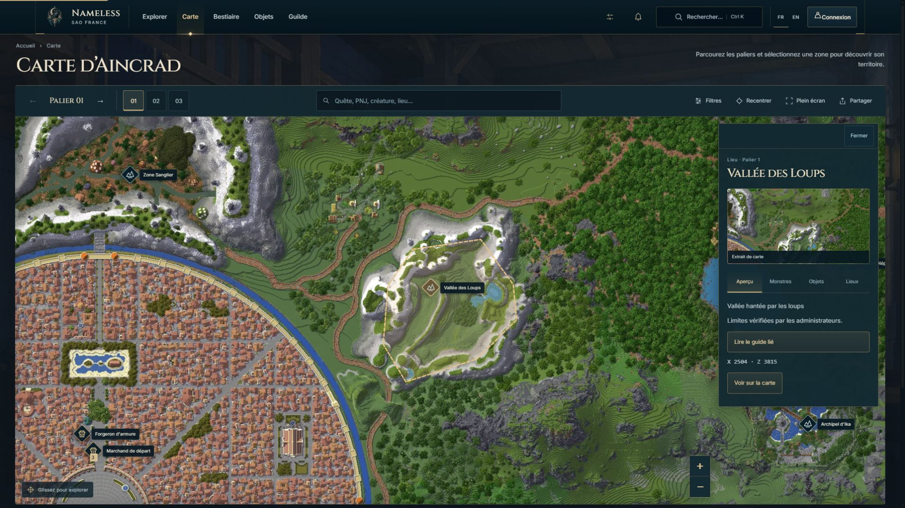
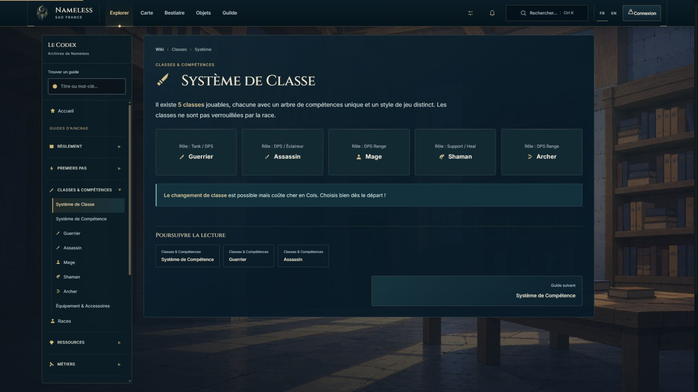

Nameless — validation des phases A et B
Fonds pleine page, accueil du Codex et interface cartographique. Captures du site local, sans données inventées. Le corbeau validé est conservé. La refonte détaillée des catalogues, de la guilde et du profil reste pour les phases suivantes.
Explorer / Codex
Carte — vue d’ensemble
Explorer / Codex
Carte — vue d’ensemble
Voir une région sélectionnée et sa fiche

Voir la lecture d’un article
